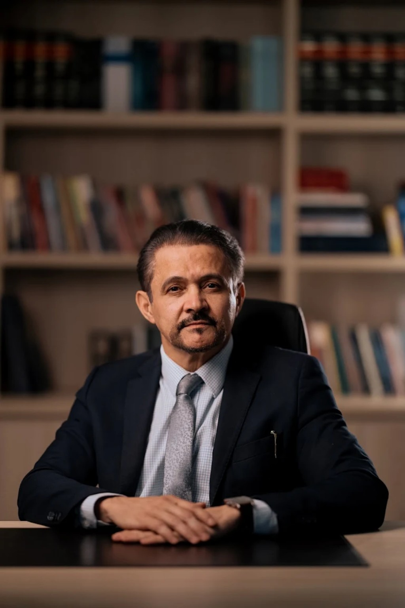
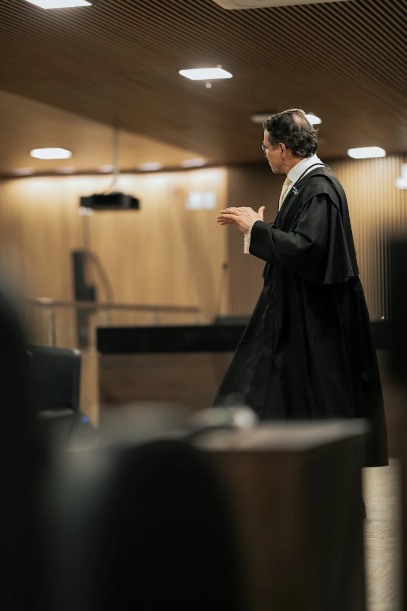

ADVOCACIA CRIMINAL · GOIÂNIA · BRASIL · INTERNACIONAL
25 anos
dedicados à
defesa da liberdade.
Estratégia, técnica e presença em questões criminais que exigem experiência, discrição e resposta imediata.
Falar diretamente com o escritório ↗
Advogado Criminalista
TRAJETÓRIA
Experiência não se declara.
É construída caso a caso.
Com mais de 25 anos de atuação no Direito Penal, David Guimarães & Advogados Associados atua em defesas complexas, júris criminais e casos de grande repercussão, do flagrante às instâncias superiores.
no Direito Penal
no Google

TRIBUNAL DO JÚRI
Onde a técnica encontra a presença.
Atuação construída na prática forense, com preparação estratégica e defesa individualizada em cada etapa do processo penal.
DEFESA · ESTRATÉGIA · LIBERDADEÁREAS DE ATUAÇÃO
Defesa criminal em diferentes momentos.
Tribunal do Júri
→Defesa Criminal
→Crimes Federais
→Defesa Criminal Corporativa
→Investigações e Inquéritos
→Violência Doméstica e Medidas Restritivas
→Antecedentes, Delitos e Reincidência
→PENSAMENTO JURÍDICO
Além dos
tribunais.
Autor de “Lawfare Midiático vs. Ativismo Judicial”, Ronaldo David Guimarães amplia o debate sobre Direito Penal, politização do Judiciário e judicialização da política também por meio de produção intelectual e workshop dedicado ao tema.
O ESCRITÓRIO
Uma defesa começa por compreender.
A equipe une técnica, estratégia e comprometimento ético. Cada situação é analisada de forma individual, com atendimento ágil e dedicado à realidade de cada cliente.
Goiânia · Todo o Brasil · Europa · Estados Unidos
ATENDIMENTO 24 HORAS